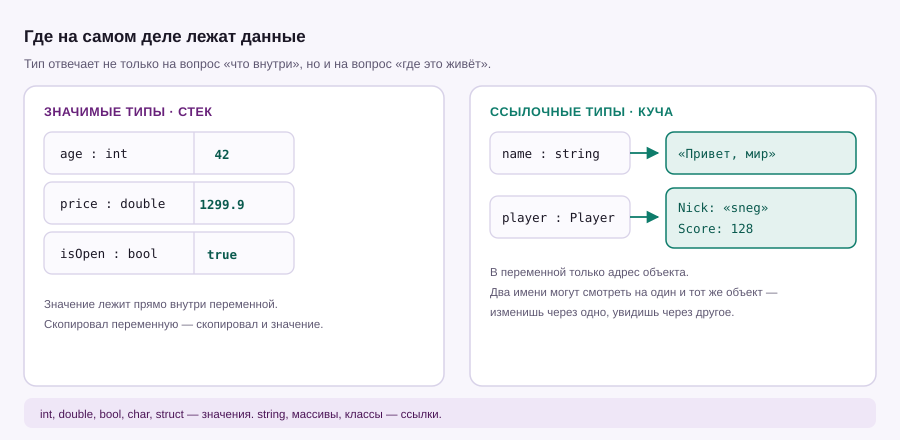

Урок 02 · 20 минут · основы
Переменные и типы данных
Переменная — это коробка с именем. Тип — это форма коробки: в int не влезет текст, а в string не влезет число без преобразования. Разберёмся, какие типы есть и когда какой брать.
Переменная — коробка с именем
Объявление всегда состоит из трёх частей: тип, имя, значение.
int age = 17; // целое число
double price = 1299.90; // дробное
string nick = "sneg"; // текст
bool isOnline = true; // да или нет
Console.WriteLine(age); // 17
Console.WriteLine(nick); // snegЗначение можно менять сколько угодно, но тип — нет. Если переменная объявлена как int, положить в неё строку не получится: компилятор остановит ещё до запуска.
int score = 100;
score = score + 50; // теперь 150
score += 10; // сокращённая запись: тоже 160
// int score = "сто"; // ошибка: нельзя положить string в int
// score = 1.5; // ошибка: 1.5 не помещается в intОсновные типы
| Тип | Что хранит | Пример | Когда брать |
|---|---|---|---|
int | целое до ±2,1 млрд | 42 | по умолчанию для целых |
long | очень большое целое | 9_000_000_000 | когда int уже мало |
double | дробное, ~15 знаков | 3.14 | измерения, графика, физика |
decimal | дробное с точностью | 1299.90m | деньги, цены, проценты |
bool | только true или false | true | флаги, условия |
char | один символ | 'A' | редко, одна буква |
string | текст любой длины | "привет" | имена, сообщения |
0.1 + 0.2 в double даёт 0.30000000000000004: двоичная дробь не может точно представить 0.1. Для цен и балансов бери decimal — он медленнее, зато считает точно. Литерал пишется с суффиксом m.
decimal wallet = 1299.90m; // m в конце обязательна
decimal fee = wallet * 0.1m; // 129.990
Console.WriteLine(fee); // 129,990
double d = 0.1 + 0.2;
Console.WriteLine(d); // 0.30000000000000004Заметил запятую в выводе 129,990? C# печатает числа по правилам системы — с запятой в русской локали. В самом коде разделитель всегда точка.
Где лежат данные
Типы делятся на две большие группы, и это влияет на то, как работает присваивание.

Для int, double, bool присваивание копирует само значение. Для string и объектов классов копируется ссылка: две переменные могут указывать на один и тот же объект. На практике это значит, что изменение через одну «видно» через другую.
var — не «без типа», а «выведи сам»
Ключевое слово var позволяет не писать тип слева: компилятор выведет его из правой части. Тип остаётся жёстким, просто не назван явно.
var city = "Екатеринбург"; // string
var score = 128; // int
var ratio = 0.5; // double
// var x; // ошибка: непонятно, какой тип
// x = 10;Правило простое: var уместен, когда тип очевиден из правой части. Если читателю кода приходится гадать — пиши тип явно.
Строки
Строки в C# неизменяемые: любая «правка» создаёт новую строку. Четыре вещи, которые нужны постоянно:
string first = "sneg";
string last = "snegovik";
string full = first + " " + last; // склейка через +
string msg = $"{full}, привет!"; // интерполяция: значение в {фигурных}
string path = @"C:\Users\ravae"; // verbatim: обратный слэш не escape
Console.WriteLine(full.Length); // 14 — длина в символах
Console.WriteLine(msg.ToUpper()); // ВСЁ ЗАГЛАВНЫМИ
Console.WriteLine(full.Contains("sneg")); // TrueИнтерполяция с $ — почти всегда удобнее склейки. Внутри фигурных скобок можно писать целые выражения: $"Итого: {price * 2}".
Преобразование типов
Число и строка — разные типы, между ними нужен мост. Способов несколько, и не все безопасны.
double d = 3.9;
int i = (int)d; // 3 — дробная часть отбрасывается, не округляется
string text = "42";
int a = int.Parse(text); // 42, но упадёт на "сорок"
int b = Convert.ToInt32(text); // то же самое
// безопасный вариант: не падает, а возвращает false
if (int.TryParse(text, out int value))
{
Console.WriteLine(value + 1); // 43
}TryParse. Это единственный вариант, который не превращает опечатку в аварию программы.
Как называть переменные
- camelCase для переменных и параметров:
userName,totalPrice. - PascalCase для классов, методов и свойств:
Player,OpenCase(). - Имя начинается с буквы или
_, без пробелов и дефисов, без кириллицы. - Имя должно отвечать на вопрос «что здесь лежит»:
balance, а неb.
Спроси у пользователя имя и год рождения, посчитай примерный возраст и выведи одну строку: sneg, тебе примерно 17 лет.
Показать решение
Console.Write("Имя: ");
string name = Console.ReadLine() ?? "";
Console.Write("Год рождения: ");
string input = Console.ReadLine() ?? "";
if (int.TryParse(input, out int year))
{
int age = DateTime.Now.Year - year;
Console.WriteLine($"{name}, тебе примерно {age} лет.");
}
else
{
Console.WriteLine("Это не похоже на год.");
}?? "" подставляет пустую строку, если пользователь ничего не ввёл, — иначе переменная была бы null.